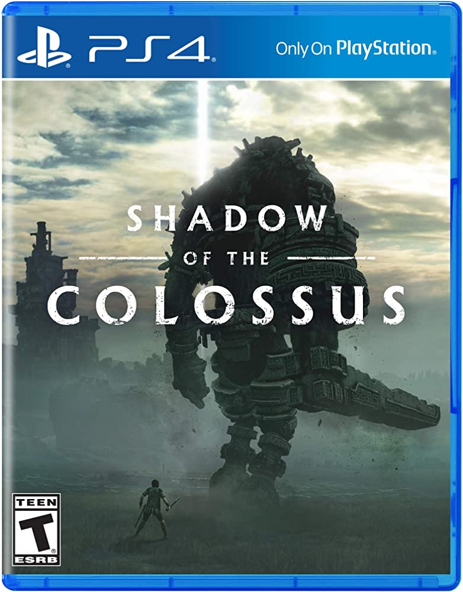
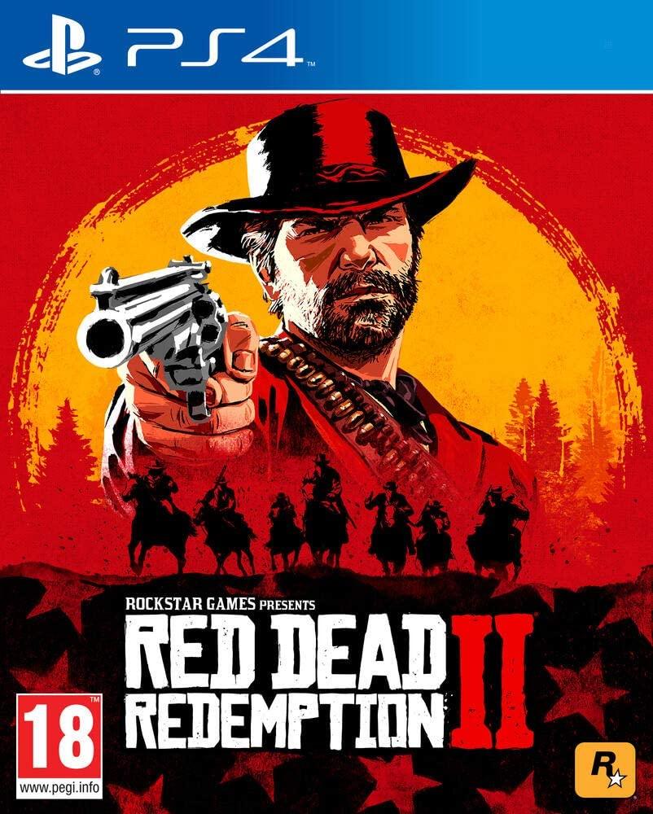

God of war 4

descrição:God of War é um jogo eletrônico de ação-aventura e hack and slash desenvolvido pela Santa Monica Studio e publicado pela Sony Computer Entertainment (SCE). Lançado pela primeira vez em 22 de março de 2005 para PlayStation 2, é o primeiro título da série com o mesmo nome e o terceiro cronologicamente. Vagamente baseado na mitologia grega, é ambientado na Grécia antiga com a vingança sendo o tema central. O jogador controla o protagonista Kratos, um guerreiro espartano que serve os deuses do Olimpo. A deusa Atena atribui a Kratos a missão de matar Ares, o deus da guerra e seu ex-mentor, que enganou Kratos para que matasse sua própria esposa e filha. Enquanto Ares ataca a cidade de Atenas por ódio a Atena, Kratos embarca em uma busca para encontrar o único objeto capaz de deter o deus de uma vez por todas: a lendária Caixa de Pandora..
R$ 257,31
Residente Evil 4

descrição:Resident Evil 4, conhecido no Japão como Biohazard 4 (バイオハザード4 Baiohazādo Fō?) , é um jogo eletrônico de survival horror e tiro em terceira pessoa desenvolvido e publicado pela Capcom, lançado originalmente para o GameCube em 2005. É o sexto jogo principal da franquia Resident Evil.A história segue o agente especial Leon S. Kennedy, que é enviado em uma missão para resgatar a filha do presidente dos Estados Unidos, Ashley Graham, que foi sequestrada por um culto religioso em uma parte rural da Espanha. Leon luta contra hordas de inimigos infectados por um parasita controlador de mentes e se reúne com a espiã Ada Wong. Afastando-se dos ângulos de câmera fixa e do estilo de jogo mais lento dos títulos anteriores, Resident Evil 4 apresenta um sistema de câmera dinâmico e jogabilidade orientada para a ação.
R$ 249,99
Dark Souls 3

descriçãoDark Souls III é um jogo do gênero RPG de ação numa perspectiva de terceira pessoa, similar aos jogos anteriores da série.De acordo com o director Hidetaka Miyazaki,o desenho do jogo “é muito parecido com Dark Souls II”. Os jogadores tem uma grande variedade de armas como arcos, explosivos como bombas de fogo,espadas grandes e duplas, e escudos que repelem os ataques inimigos, protegendo o jogador.Em adição, os ataques podem ser evitados com o dodge-rolling. As fogueiras,que servem como ponto de controle intermediário, regressam para este jogo. As cinzas, de acordo com Miyazaki, têm um papel importante no jogo.A Magia está incluída no jogo, assim como a barra de magia, similar a Demon's Souls. Cada ataque tem dois estilos diferentes: um é o padrão, enquanto que outro dá melhorias para o jogador, além de ser um pouco mais poderoso. Enquanto fazem milagres e feitiços,
R$ 149,89
Shandow Of Colossus
descrição:Shadow of the Colossus, lançado no Japão como Wander and the Colossus (ワンダと巨像 Wanda to Kyozō?),[1] é um jogo eletrônico de ação-aventura desenvolvido pela SCE Japan Studio e publicado pela Sony Computer Entertainment para o PlayStation 4. O jogo foi lançado na América do Norte e no Japão em outubro de 2005 e em territórios PAL em fevereiro de 2006. Ele foi dirigido por Fumito Ueda e desenvolvido pelo International Production Studio 1, também conhecida como Team Ico; o mesmo time de desenvolvimento de Ico.[3][4] O enredo do jogo se concentra em um jovem chamado Wander, que deve viajar por uma terra proibida com o objetivo de derrotar dezesseis criaturas, conhecidas simplesmente como "Colossi",[5] para restaurar a vida de uma garota chamada Mono. O jogo é incomum dentro do gênero de ação-aventura já que nãoexistem cidades e calabouços para serem explorados.
R$239,96
Red Dead Redempion 2
Descrição:Red Dead Redemption 2 é um jogo eletrônico de ação-aventura desenvolvido e publicado pela Rockstar Games. É o terceiro título da série Red Dead e uma prequela de Red Dead Redemption, tendo sido lançado em outubro de 2018 para PlayStation 4 e Xbox One e em novembro de 2019 para Microsoft Windows e Google Stadia. A história se passa em 1899 em uma representação ficcional do oeste, meio-oeste e sul dos Estados Unidos e acompanha o fora da lei Arthur Morgan, que precisa lidar com o declínio do Velho Oeste e sobreviver à perseguição de forças governamentais, gangues rivais e outros adversários. A jogabilidade é apresentada tanto em uma perspectiva em primeira quanto em terceira pessoa, com o jogador sendo livre para explorar e interagir com o mundo aberto. Elementos de jogabilidade incluemtiroteios, assaltos, caça, cavalgadas, interação com personagens não jogáveis e gerenciamento da honra do protagonista.
R$249,90
grand theft auto v

Descrição:Grand Theft Auto V é um jogo eletrônico de ação-aventura desenvolvido pela Rockstar North e publicado pela Rockstar Games. É o sétimo título principal da série Grand Theft Auto e foi lançado originalmente em 17 de setembro de 2013 para PlayStation 3 e Xbox 360, com remasterizações lançadas em 2014 para PlayStation 4 e Xbox One, em 2015 para Microsoft Windows e em 2022 para PlayStat ion 5 e Xbox Series X/S. O jogo se passa no estado ficcional de San Andreas, com a história da campanha um jogador seguindo três criminosos e seus esforços para realizarem assaltos sob a pressão de uma agê ncia governamental. O mundo aberto permite que os jogadores naveguem livremente pelas áreas rurais e urbanas de San Andreas. A jogabilidade é mostrada em uma perspectiva de primeira ou terceira pessoa e o mundo pode ser atravessado a pé ou com veículos. Os jogadores controlam três protagonistas e podem alternar entre eles